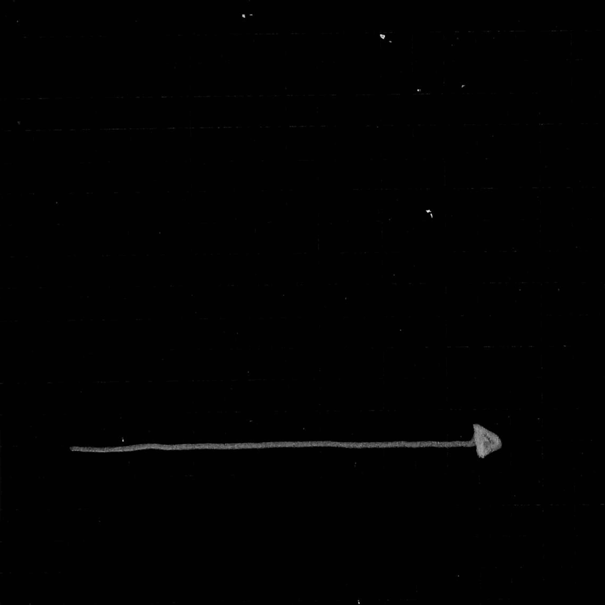
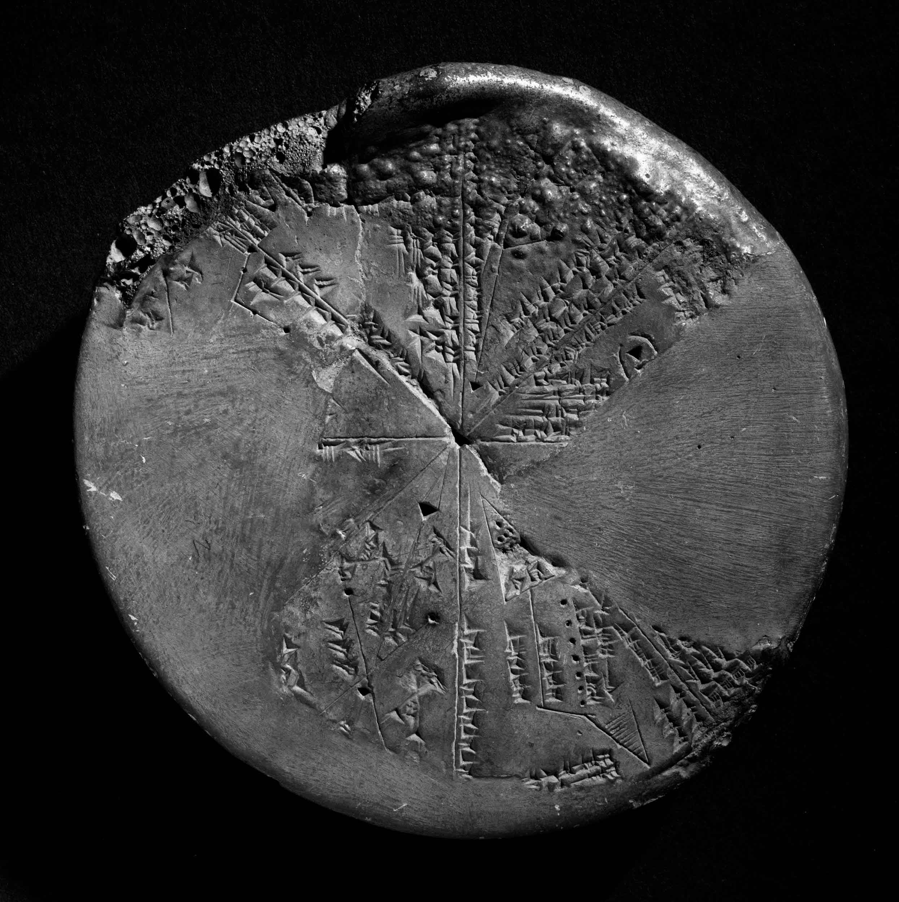
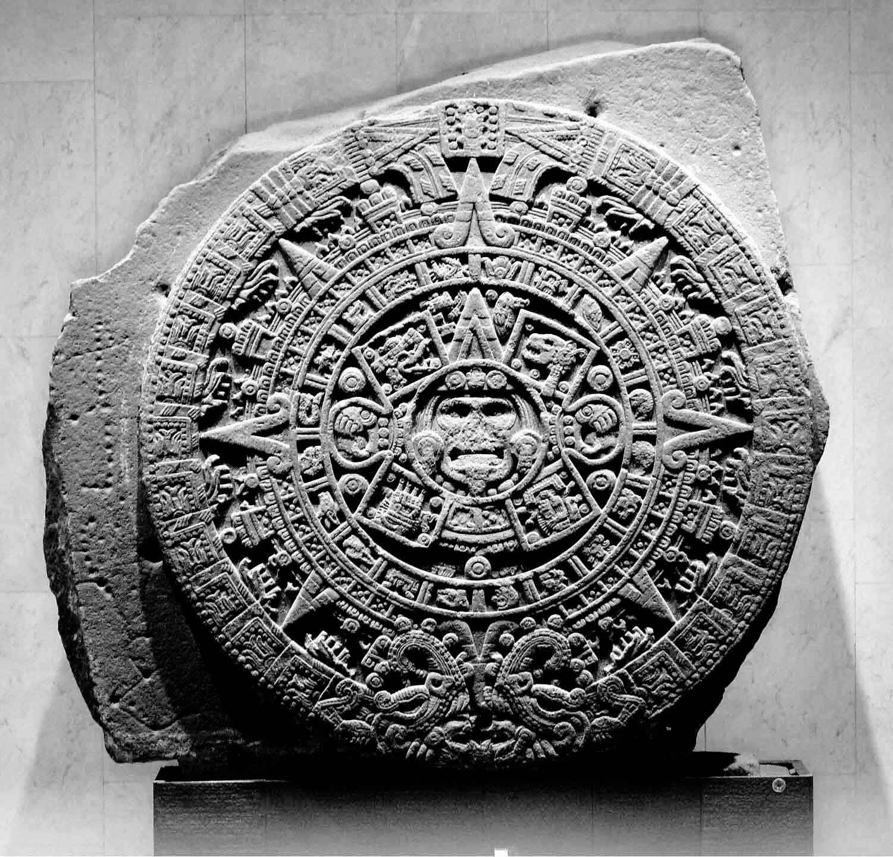
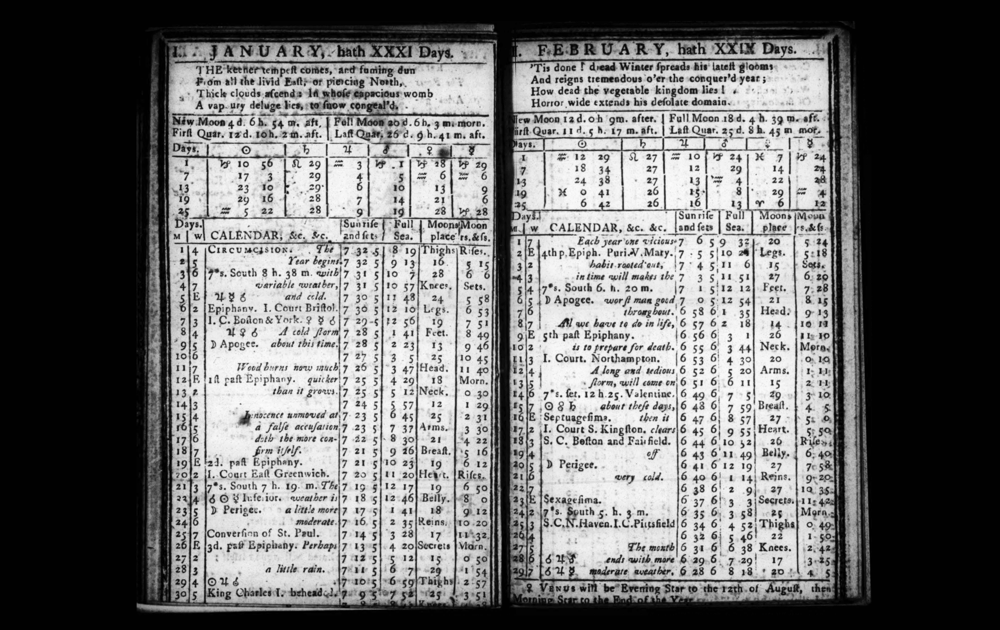
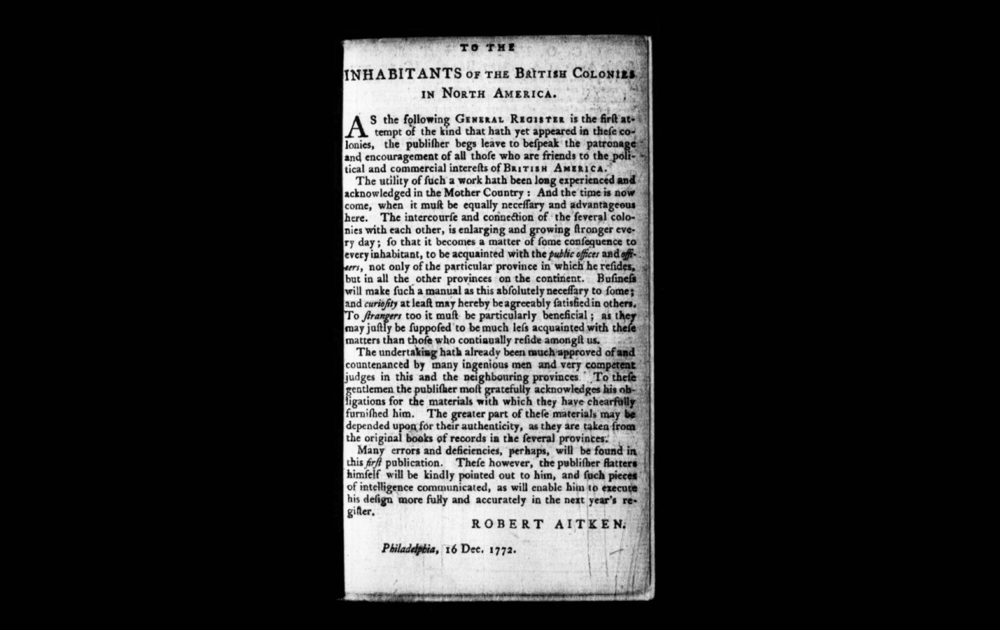
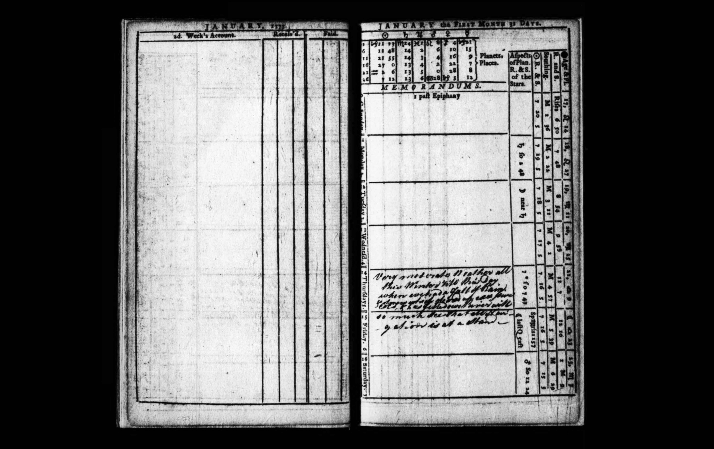
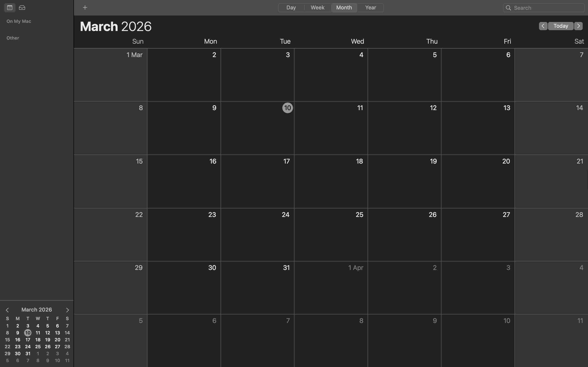

THE DESIGNER AS TIME BENDER
How do Graphic Designers work outside of temporalities imposed by capitalism?
An essay by Frederico Pereira
ABSTRACT
From a personal struggle with positioning myself inside the practice of Graphic Design within values that I
find to be aligned with my own. How to work in an environment that respect natural temporalities, and where
can I find this space inside the graphic design practice? From a need to escape the practice of graphic
design that helped build the overproduction one finds in today’s society, to finding ways to create with a
more relevant, informative and in constant renewal practice. Escaping authorship and individuality to find
more communal, slow ways of working.
As sources this essay uses the evolutionary history of calendars as a visual guide to pinpoint the changes
in temporalities that abstract us from nature, and notions of time from Greek mythology, essays & books on
time & work, books on commons in design, a manual that imagine other ways of living, music’s and
conversation’s with designers and artists.
The title and writing style was inspired by Ruben Pater’s book Caps Lock, hinted by Dirk Vis during a feedback session.
INTRODUCTION
In today’s world humans under capitalism work more than a person in Paleolithic era, a person could achieve a comfortable life working 15 hours a week¹ that was 2,5 million years ago. Today we work twice as much, a question arises. Why do humans work so much? The more “advanced” our society is the more we seem to work. Our life in today’s society resolves around work, not only we spend the majority of our time working, everything we do with the rest of our time is to be able to be productive at work.² The distinction between employers time and own time carries the structure that time it’s quantitative and can be divided into fragments, creating the perception that time is something that can be spent.³ So in this essay I will explore how our perception of time changed over history through the visualisation of calendars and who benefits from time being divided into parcels, and finally how can Graphic Designers work outside of temporalities imposed by capitalism?
THE CONSEQUENCES OF LINEAR TIME
Time in a capitalist society is something that we perceive as linear as the ancient Greeks would call
Chronos time⁴, this means that time is measured horizontally from one point to the other, and the space in
between. This way of perceiving time in the design industry can be experienced with the word “deadline”,
literally the death of the line, it’s used to Wmeasure a project length, beginning and ending, framing
creativity into a time structure.

Chronos
Deadlines alienate us from our creative power forcing the designer to make decisions based on the time they have left rather then decisions based on the quality of the outcome.⁵ This is how most work inside companies is organised nowadays focusing on the speed on which tasks are performed. This way of working can be traced to the industrial revolution with the implementation of a method called scientific management that served to benefit workers that could perform the same task in a shortest amount of time.⁶ Even if not working inside a company where these deadlines come from the hierarchical structure above the designer, a freelancer experiences the deadlines directly from the client side. Clients are the ones dictating the rhythm of production, and most of the time, the more money clients are spending, the more entitled they feel to shape designers’ creative process. One may think working with funds can feel freer from said temporality’s but most of the times these funds are also shaped in ways that force projects into form, shape and time, reinforcing a culture led by burnout.⁷
After talking with two creative directors working in the advertising industry—they prefer to stay anonymous—one said “it’s fucking crazy we monopolize creativity into an ask” and I agree, an ask shapes the creative process, both in time and form. What makes oneself submit to such constraints, it’s related to the speed on which a capitalist society produce anchored only to chronos.
In today’s society we are supposed to make projects that are fast in production, short term use, and discarded after, like a Portuguese song from Taxi, chiclete⁸, that metaphorically compares society to a bubble gum.
EXPERIENCING TIME THROUGH CALENDARS
Through the study of calendars one can see how the tools for visualising time shaped our perceptions of it.
The visual representation of a calendar has existed for around 6000 years. During the Bronze Age, Sumerians⁹
developed early lunar and solar-based systems to track agricultural cycles and time. Later also Aztec’s.¹⁰

Sumerian calendar

Monolito de la Piedra del Sol
Early calendars were often circular to represent cyclical time and functioned as perpetual tools, they could
be used for several years, and served for calculating dates rather than planning daily activities, the
visualisation of this calendars can be associated to the greek deity Aion¹¹ that represents cyclical time,
this is a more natural way for humans to perceive time since that’s how nature works.
Aion
With time, humanity had more information regarding earth cycles, and started to incorporate this information into almanacs. Almanacs served as informative books containing the Earth’s cycles in different categories. They included information such as weather forecasts, tide predictions, eclipses, the cycles of the Moon, and the cycle of the Sun with sunrise and sunset times throughout the year. Religious and prophetic assumptions were also included. We can see an example of an almanac from 1772.¹²

The Massachusetts calendar or an almanac for the year of our lord 1772
DESIGN TO CONTROL
In 1772, the Robert Aitken published the Complete Annual Account Book and Calendar for the Pocket or
Desk,¹⁴ a combination of an “Account Book” and a “calendar”.
This book was published during the beginning of the industrial revolution, I do find that of no coincidence,
since industrialisation we were forced to follow the factory clock¹⁵ instead of sun rhythms,¹⁶ and through
the Aitken calendar we started to lose the connection we had with Aion. Human needs started to be attached
to chronos, we moved to a notion of time that is exact, the industrial time.¹⁷
This book was made specially for the ones who needed to keep their underlings in check, businesses, like he
stated in this same book’s introduction. “For some, business will make such a reference absolutely
essential; for others, curiosity alone may be pleasantly satisfied by it. It must be particularly helpful to
strangers, as they are naturally less familiar with these matters than those who live among us
continuously.” Robert Aitken 1772¹⁸

Eighteenth-century aitkens general american register, and the gentleman’s and trademan’s complete calendar, robert aitken 1772
As Aitken designed this book for businesses but the intention was also to make “strangers” familiarised with forms of organisation and accounting. This “strangers”, or peasants, nowadays are fully familiarize with Aitken proposal because in today’s world we are all businessmen, or capitalists.¹⁹

Eighteenth-century aitkens general american register, and the gentleman’s and trademan’s complete calendar, robert aitken 1772
Modern digital calendars²⁰ are tools to organize our tasks in the most optimised way, that enable us to micromanage time, they are not perpetual and are tailored for the individual, framing time to be something that is personal and can be controlled by everyone, the perfect tool for capitalism.

Apple Calendar March 2026
One can see from the evolution of calendars that ways of experiencing time also changed, and that ways in which calendars are used today are only anchored to the linear way of perceiving time.
GRAPHIC DESIGN ALTERNATIVES
The calendars we have nowadays aren’t necessarily the problem, but helped shaped a society that is attached
to optimisation and individuality, and detached from the planet’s natural rhythms, so what projects and
initiatives try to adapt and create more cyclical and social ways of working, creating space for community
and knowledge to be perpetual and not discarded?
Being together - A manual for living, a book by Grace Ndiritu reflects on the project The Ark: Center for
interdisciplinary experimentation²¹ that Ndiritu organised. The project try’s to find other ways for humans
to relate to each other and to time. The schedule of the workshop was associated with body chakras,²²
associating time with the human body.
For the first 6 days the workshop had no audience so participants were close in the space to encourage
creativity and vulnerability. The workshop had the intention for the participants to reimagine life and find
radical ways for today’s world problems.
A publisher that works under other temporalities is Humdrum press, based in Rotterdam and Berlin, they focus
on finding ways to deconstruct and reconstruct the publishing scene, like stated in their website “We commit
to making more communal, durational, accessible, and transparent the processes, positions, and entry points
to publishing, both as a practice and as a resource”.²³This takes shape by adopting an open-source model of
publishing, meaning that all of their publications are free to access in their website. Also by the creation
of events where the knowledge contained in the publications can be activated prior their launch, though this
initiative a book it’s not finished after being launched, and there is space for the author and the readers
to reflect on the content, creating a space for community to exist.
As a collective, Varia²⁴ based in Rotterdam, experimented with physical and digital infrastructures needed
for collective and cultural work. Preferring to use and develop under free and open source software.
Another example in the publishing world its Valiz, a publisher based in Amsterdam, whose books are launched
under creative commons. Although creative commons still has some constraints for reproduction purposes, it
is a step to a more open economy, promoting open access to knowledge. They have a tab in their website where
they share activities,²⁵ this contains Events, Open-calls, Book-fairs, Books launches, Exhibitions &
Art-fairs, informing the community with places where they can interact & collaborate, and they claim they
want to apply for ANBI status, those are institutions in the Netherlands that work for public benefit.
As a type foundry, Vevetyne,²⁶ work under Open font license - free use and open code, meaning that Designers
can use the fonts for free and do any kind of change to them without any constraints of ownership.
These are some examples of how to work in the graphic design industry, using protocols like Open-source,
Open-font license, Creative Commons, Copy left that promote a shared economy and open access to tools and
information that can be used, changed and adapted. By doing projects that incentivise reflection on how
society is organized, creating space for reimagining new futures that escape the temporalities imposed by
capitalism.
CONCLUSION
The third god of time is Kairos, it refers to vertical time, the amplitude or depth that can be found in
chronos & Aion.²⁷ This amplitude is what makes our perception of time expand and contract, that’s why we
don’t feel time only in a linear way.
Chronos&Kairos
Aion&Kairos
As designers, we carry a responsibility to change how design is viewed and used, together we can create more amplitude in our time. We have to unite and stay united with our convictions and stay close to what gives us freedom of expression to set an example of how society can and should change its modes of production to become more connected socially and environmentally. And let’s remember that it took 64 years of struggle by labour unions to guarantee the 8 hours of freedom we can enjoy today.²⁸ Change is not fast, but nothing that lasts is.
When they cut my feet,
They put me together,
with others inside,
There is no time to breathe,
only time to be,
They gave me the tools
to alter my body,
and force me to do it,
till I became somebody.
There is no time to breathe,
only time to be,
They drag me to school,
An showed me a clock,
So I count the time it takes
to become a rock,
There is no time to breathe,
only time to be,
I looked at a mirror,
There is nobody there,
This isn’t my watch,
Where is my flare?
There is no time to breathe,
only time to be,
But then I remember that I was a tree,
And there was nothing else I wanted to be.
tre
REFERENCES
[1] Le Guin, Ursula K. ‘The Carrier Bag Theory of Fiction’. In Women of vision. By Internet Archive, archive.org/details/womenofvision00dupo/page/n7/mode/2up, p. 2.
[2] Pater, Ruben. ‘The designer as worker.’ In Caps Lock. Edited by Leo Reijnen, p. 241. Amsterdam: Valiz,
2021.
[3] Thompson, E. P. ‘Time, work-discipline, and Industrial capitalism’. By Tems, tems.umn.edu/pdf/EPThompson-PastPresent.pdf, p. 3.
[4] Hickman, Daniel. ‘Chronos, Kairos, and Cyclical Time.’ By Love Alone, 24 January 2026,
bylovealone.substack.com/p/chronos-kairos-and-cyclical-time, accessed 3 February 2026.
[5] Paeva, Victoria. ‘*Workshop Matters: How Can Access to Co-Workshop Spaces Change a Designer’s
Practice.’ In Commons in Design. Edited by Christine Schranz, p. 131. Amsterdam: Valiz, 2023.
[6] Pater, Ruben. ‘The designer as worker.’ In Caps Lock. Edited by Leo Reijnen, p. 248. Amsterdam: Valiz,
2021.
[7] Gowen, Amy and Andy Norstrom, ‘Expansive Publishing Strategies’. By HumDrumPress,
humdrumpress.com/eps-about, accessed 30 March 2026.
[8] Taxi. ‘Taxi - Chiclete’. YouTube, uploaded by TaxiVEVO, 1981 Universal Music Portugal, S.A, 11
April 2026.
[9] British Museum. britishmuseum.org/collection/image/325946001.
[10] commons.wikimedia.org/wiki/File:Monolito_de_la_Piedra_del_Sol.jpg.
[11] Hickman, Daniel. ‘Chronos, Kairos, and Cyclical Time.’ By Love Alone, 24 January 2026,
bylovealone.substack.com/p/chronos-kairos-and-cyclical-time, accessed 3 February 2026.
[12] Philomathes. ‘The Massachusetts calendar, or an almanac for the year of our Lord, 1772.’ By
Internet Archive, archive.org/details/bim_eighteenth-century_the-massachusetts-calend_gleason-ezra_1772,
pp. 5-6. accessed 10 March 2026.
[13] Gleick, James. The Toll of the Clock. copy.exchange/JamesGleick_HistoryOfClocks.pdf, p. 6. accessed
21 January 2026.
[14] Aitken, Robert. ‘Aitken's general American register, for the year of our lord 1773’. By Internet Archive,
archive.org/details/bim_eighteenth-century_aitkens-general-america_aitken-robert-booksell_1772,
pp. 6-7. accessed 27 February 2026.
[15] Hickel, Jason. ‘Less is More, How Degrowth will save the world.’ By blackbooksdotpub,
blackbooksdotpub.wordpress.com/wp-content/uploads/2021/08/jason-hickel-less-is-more-random-house-2020.pdf,
p. 50. accessed 3 of April 2026.
[16] Pater, Ruben. ‘The designer as worker.’ In Caps Lock. Edited by Leo Reijnen, p. 245. Amsterdam:
Valiz, 2021.
[17] Gleick, James. The Toll of the Clock. copy.exchange/JamesGleick_HistoryOfClocks.pdf, p. 6. accessed
21 January 2026.
[18] Aitken, Robert. ‘Aitken's general American register, for the year of our lord 1773’. By Internet Archive,
archive.org/details/bim_eighteenth-century_aitkens-general-america_aitken-robert-booksell_1772, p.
3. accessed 27 February 2026.
[19] Odell, Jenny. ‘The Case for Nothing’. In how to do nothing, resisting the attention economy, By
bpd, bpb-us-e2.wpmucdn.com/sites.middlebury.edu/dist/a/5353/files/2022/02/Jenny-Odell-How-to-Do-Nothing-excerpt-.pdf,
p. 12. accessed 3 of April 2026.
[20] Screenshot from Apple Calendar, 2026.
[21] Ndiritu, Grace. Being Together A Manual For Living. Edited by Grace Ndiritu and Sébastien Tien. Page
Not Found.
[22] Ndiritu, Grace. ‘Daily schedule’. By The ark center experiment,
thearkcenterexperiment.com/DAILY-SCHEDULE, accessed 2 April 2026.
[23] Gowen, Amy and Andy Norstrom, ‘about’. HumDrumPress, humdrumpress.com/eps-about, accessed 30 March 2026.
[24] ‘Who we are’. By Varia, varia.zone/en/about/who-we-are/, accessed 2 April 2026.
[25] ‘Activities’. By Valiz, valiz.nl/en/#activities, accessed 2 April 2026.
[26] ‘About’, By velvetyne, velvetyne.fr/about/, accessed 2 April 2026.
[27] Hickel, Jason. ‘Less is More, How Degrowth will save the world.’ By blackbooksdotpub,
blackbooksdotpub.wordpress.com/wp-content/uploads/2021/08/jason-hickel-less-is-more-random-house-2020.pdf,
p. 50. accessed 3 of April 2026.
[28] Pater, Ruben. ‘The designer as worker.’ In Caps Lock. Edited by Leo Reijnen, p. 246. Amsterdam:
Valiz, 2021.
COLOPHON
Text & Design
Frederico Pereira
Typefaces
Basteleur by Keussel. Available at velvetyne.fr.
Standard by Bryce Wilner. Available at uncut.wtf.
Proofread
Méabh O’Halloran
Supervised
Dirk Vis
Acknowledgments
Thanks to all the people that helped from sharing references, inspired and motivated me during the process of writing this essay. Katerina Sidorova, Dirk Vis, Maya Curé, Méabh O’Halloran, Miron Konurbaev, Juliana Migueis, Bart Baets, Simnikiwe Buhlungu, Eme, Dasha Glushkova, Zoe Ng Gschmaiss, Anna Silva, Alex Rainer, Suzie Veldhuijzen, Alessia Campanella, Bertus Gerssen, Lauren Alexander, Chantal Hendriksen, François Girard-Meunier, Thomas Bruxo, Pyotr Golub & Olivia Huynh